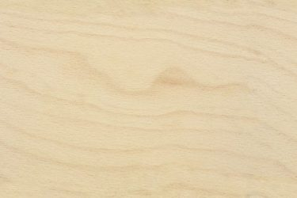
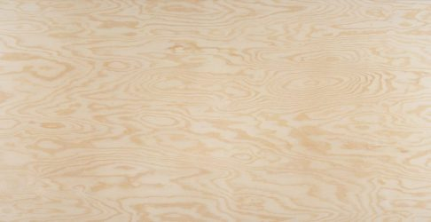
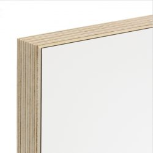

Binderholz

De Binderholz plaat is ontwikkeld voor hoogwaardige toepassingen in interieurprojecten en
meubelvervaardiging. De milieuvriendelijke 3-laagse verlijming garandeert alle goede eigenschappen van
massief hout met als bijkomend voordeel een steviger en duurzamer product. De productie is conform het
PEFC-label voor verantwoord bosbeheer. Binderholz wordt verlijmd of gebeitst.
Multiplex


Multiplexplaten zijn samengesteld uit drie of meer (altijd oneven aantal) op elkaar gelijmde lagen, waarvan
de vezelrichtingen van de opeenvolgende lagen (gewoonlijk loodrecht) op elkaar staan. Zo is het een product
met alle unieke eigenschappen van hout, maar daarnaast een grotere stabiliteit en grotere afmetingen. Wij
werken met Europese houtsoorten afkomstig uit productiebossen, die na houtkap opnieuw aangeplant worden –
Berk, Grenen en Populier. Multiplex wordt verlijmd, of bekleed met laminaat.
MDF
MEDITE MDF is een MDF-plaat voor algemene doeleinden en geschikt voor de meeste toepassingen. Dit
plaatmateriaal wordt gemaakt van fijnvezelig geperst houtvezel en door warmte verlijmd tot houtstof. Onder
hoge druk en bij een hoge temperatuur wordt dit samengeperst tot een plaat waarbij de natuurlijke
bindingselementen van het hout als natuurlijk ‘lijm’ dienen. Er plakken de wij compliant gebruik van 70%-80%
FSC gelabeld. Op vraag kan ook de formaldehydevrije variant gebruikt worden, maar die is moeilijker te
behandelen. MDF wordt typisch verlijmd of gelakt.
OSB
Eigenlijk een constructieplaat en daarom vrij goedkoop, maar kan ook perfect gebruikt worden voor meubels
uit te maken. Smartply OSB is vervaardigd uit FSC-gelabelde houtvezels (FSC mixed sources) en
formaldehydevrij verlijmd.
Rubberwood
Van de rubberboom wordt natuurlijk latex afgetapt. Als de latexproductie stopt, wordt het hout van de boom
benut voor het vervaardigen van massieve meubelplaten. Een soort van recuperatie van de boom en kan leven
als laathout door. Rubberwood wordt: verlijmd, gebeitst of gelakt.
Fineer
Fineer is fijn hout dat van een boomstam wordt versneden tot zeer dunne vellen. Zo’n fineerlaag is gemiddeld
tussen de 0,5 en 2 millimeter dik, en wordt verlijmd op een drager zoals MDF. Door de boomstam in vellen te
versnijden, haal je meer waarde uit hetzelfde materiaal. We werken met Europese houtsoorten met FSC/PEFC
label. Aangezien er zo veel soorten bestaan, is fineer steeds op bestelling. Gefineerde platen worden
verlijmd.
Laminaat

Laminaat bestaat uit meerdere lagen papier die verlijmd worden met kunsthars en onder hoge druk en bij hoge
temperaturen samengeperst. Laminaat is gemiddeld 0,8 mm dik. Laminaat verlijmen we veel op multiplex of MDF,
en is in heel wat kleuren te verkrijgen. Weet dat laminaat is goedkoper dan eik gekleurd.